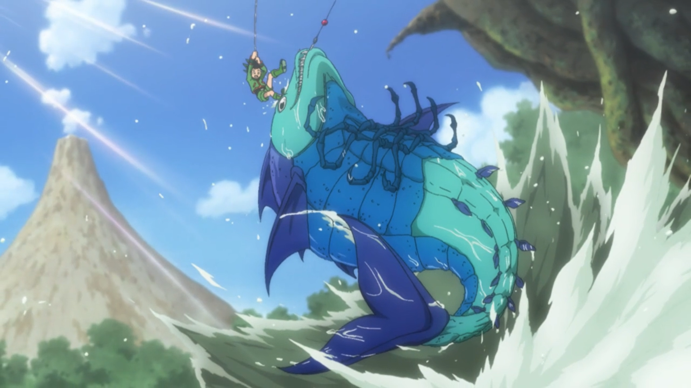
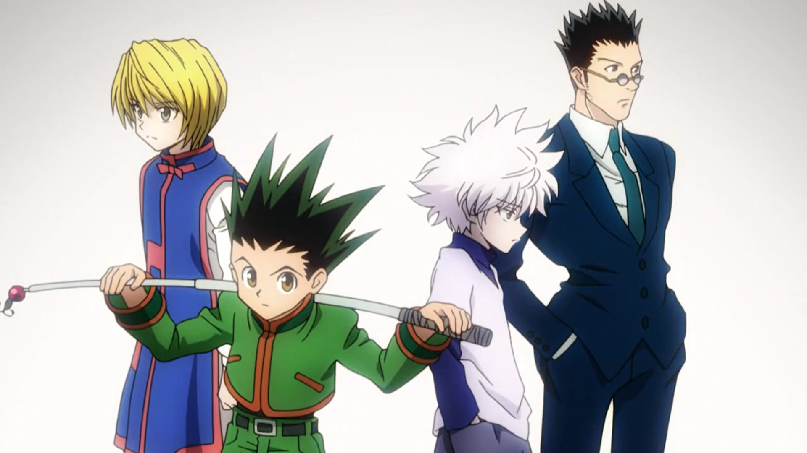
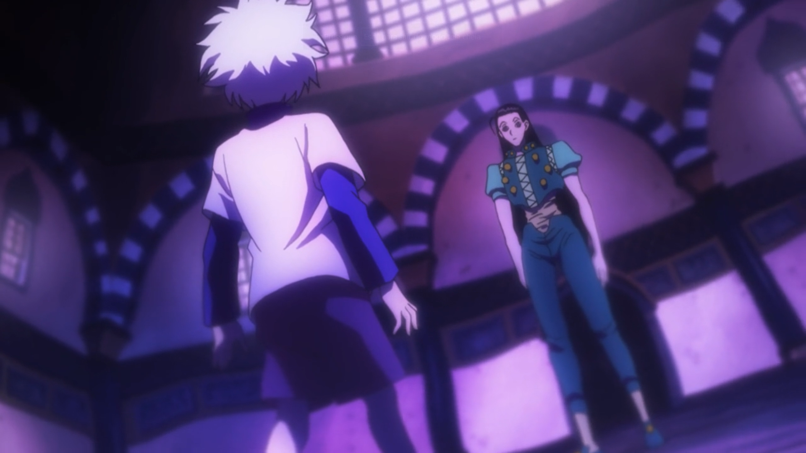
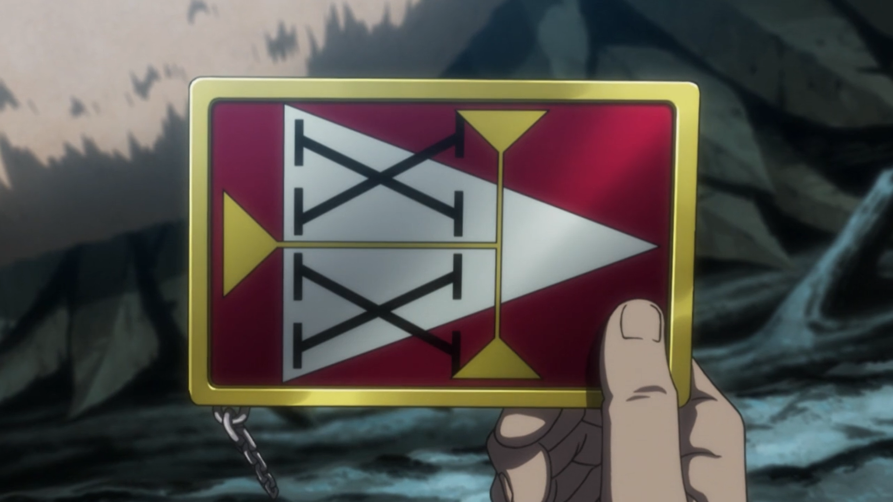
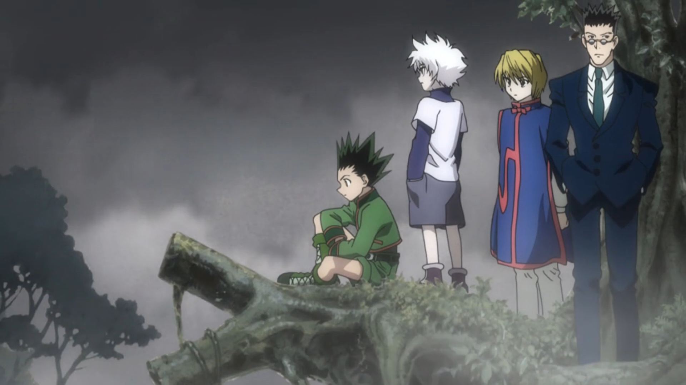
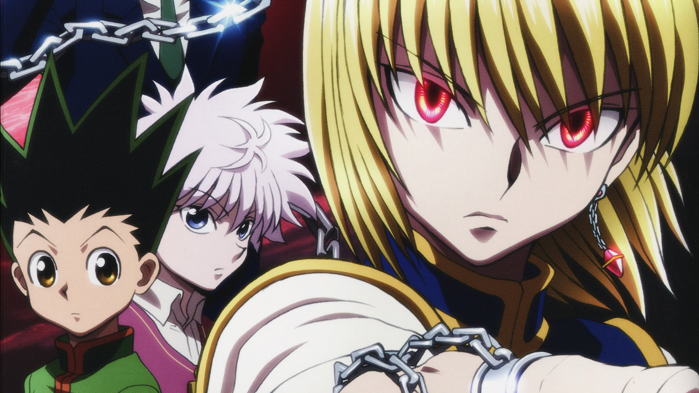
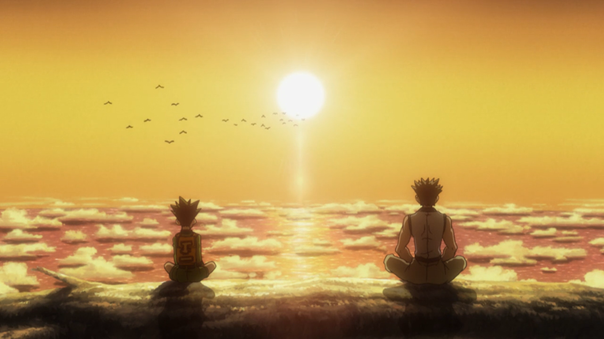
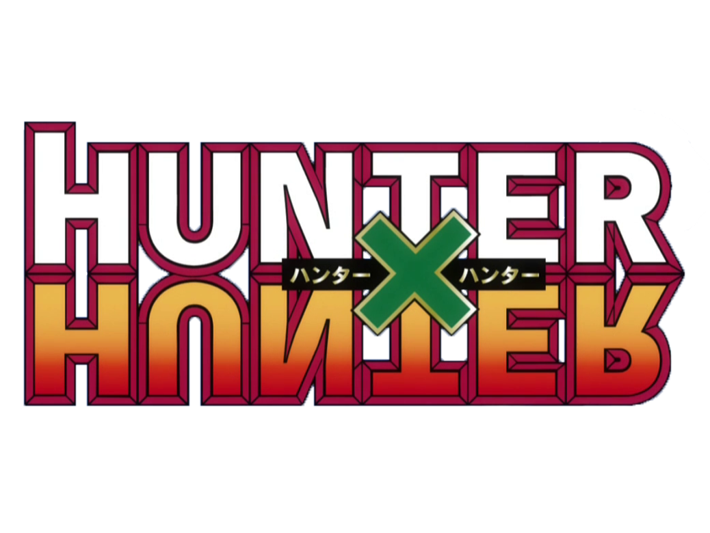

A série conta a história de Gon Freecss, um garoto de 12 anos que pretende se tornar um Hunter. Para poder praticar essa reconhecida profissão, é necessário ter uma licença especial. Uma vez aprovado e com sua licença Hunter em mãos, o caçador passa a ter direito a acessar áreas restritas, informações secretas e consegue acumular facilmente uma grande fortuna de acordo com seus feitos, incluindo ir atrás de Hunters que usam seus poderes para objetivos suspeitos.
X